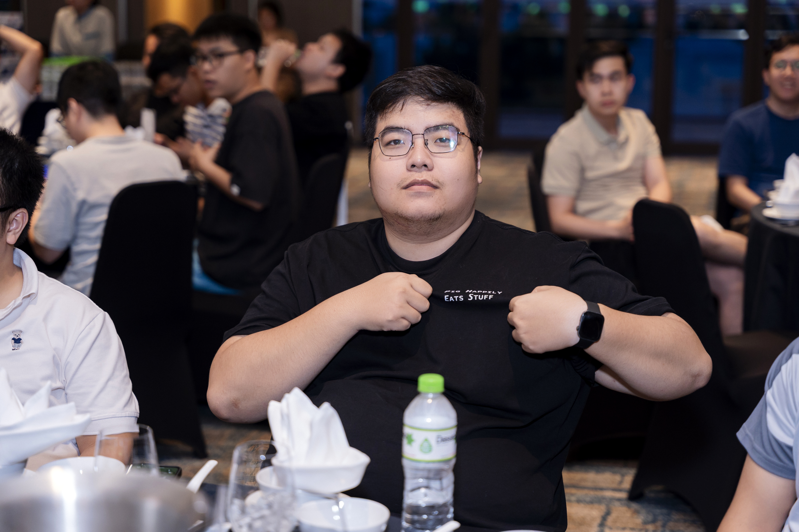

Tôi là kỹ sư phần mềm ở Hà Nội, làm backend tại Base.vn từ tháng 3/2024. Tôi bắt đầu với lập trình thi đấu và các dự án thị giác máy tính, rồi chuyển sang xây dựng hệ thống backend hiệu năng cao.
Ở Base.vn, tôi làm trên nền tảng định danh (OAuth 2.0, OIDC, SAML SSO, MFA, phân quyền chi tiết bằng OpenFGA), hệ thống thông báo thời gian thực đa tenant, hạ tầng gọi video WebRTC và nền tảng lưu trữ đám mây Base DrivePro.
Trước đó tôi xây dựng nền tảng nghiên cứu và giao dịch định lượng tại INF-Capital. Tôi từng được vinh danh Pioneer Engineer of the year tại Base.vn (2024) và đạt nhiều giải lập trình thi đấu sinh viên.
